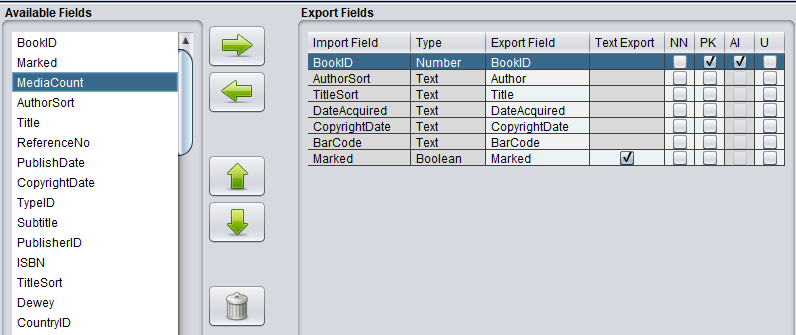

Export Fields
Button Panel
| Button |
Description |
 |
Adds field(s) from the "Available Fields" Table to the Selected Fields Table |
| |
Removes selected field(s) from the "Export Fields" Table |
 |
Moves a selected field in the "Export Fields" Table one place up |
 |
Moves a selected field in the "Export Fields" Table one place down |
 |
Clears the entire "Export Fields" Table |
Export Fields (default)

Available Fields
In this List provides you with a list of available field of the "Export From" database that
you can select for your export file
Note: You can select or deselect more than one field by using the left
mouse button in combination with the Shift or Ctrl key (like in Microsoft Explorer).
Export Fields
In this Table you can see the database fields to be exported and their types. The "Export
From" fields are the field names that you've selected from the "Available Fields" List,
the "Export To" fields are the Field names for the export file. In "Text Export" you
could tell the program to convert certain fields from boolean, date or time to text (as
defined in the General Settings).
Notes: You can select or deselect more than one field like in the "Available Fields"
List. You can edit a "Export To" Field by double clicking on it. After you've typed in
your changes, you should however either press the Enter key (or click once again on the
table with the mouse) to keep your changes.
Important: If the "Export To" field name, doesn't match the export file criteria then
the program will try to enforce the export file standard. For example if you are exporting
to a DBase file then the program will truncate the field name to a maximum of 10 characters
and convert the lowercase characters in the field name to uppercase.
Export Fields (SQL databases)

Additional Export Fields
For SQL databases we've added four additional fields that helps us to build a new table and to
specify the rules (constraints) for the data in the table. Constraints are used to limit the
type of data that can go into a table. This ensures the accuracy and reliability of the data
in the table. If there is any violation between the constraint and the data action, the action
is aborted.
The program only uses this information if the table doesn't exist in the database or when you
use the option to export to a new Table. The following constraints are supported:
- Not null (NN)
Ensures that a field/column cannot have a NULL value
- Primary key (PK)
A combination of a NOT NULL and UNIQUE. Uniquely identifies each row in a table. This constraint
is mandatory, for at least one column, for most SQL databases with SQLite being the exception,
- Autoincrement (AI)
Auto-increment allows a unique number to be generated automatically when a new record is inserted
into a table. Often this is the primary key field that we would like to be created automatically
every time a new record is inserted. SQLite only supports this constraint for primary key fields.
- Unique (U)
Ensures that all values in a field/column are different (or NULL).